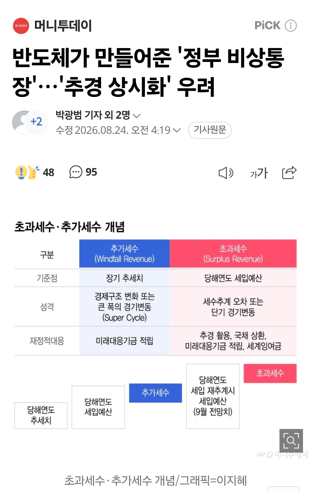

먼데 먼일임??


아 돈 달라고 ㅋㅋㅋ
나라 전체가
거대한
전장연이 되었구나
먼데 먼일임??

아 돈 달라고 ㅋㅋㅋ
나라 전체가
거대한
전장연이 되었구나
ㅂㅅ같은건 당연한거고
왜 ㅂㅅ짓하냐는 다른거니까
사실 건전하지만, 그럼 내년 예산 많이 못탈테니까, 어떻게든 더 끌어올려고 쇼하고있다는거잖아
공유지의 비극처럼 다 공짜 퍼먹기 하다가 한순간에 터짐
세금도둑에 기업 돈까지 징수임? ㅋㅋㅋ 거기에 국민들 세금도 올하가고 세수없는 어쩌고 어디갔냐 ㅋㅋㅋㅋㅋ 걍 누가 되던 해가 지날수록 나라꼬라지 씹창나네
이런 새끼들이 맨날 서울공화국 타령하니까 뵈기 싫은거
서울 공화국 하면 저런거 없을거 같음?
서울도 예산 낭비 찾아보면 상당함.
세수가 워낙 많으니까 티가 안나는거 뿐이지.
그니까 똑같은 병신들인데 왜 서울공화국타령하냐고 타령하는 놈들이 깨끗한 것도 아닌데
내가 이거 꼴보기 싫어서, 지들 원하는 것(겉으로는 서울 집값 비싼거 싫다 -> 근데 내 집값은 떨어지면 안된다)을 극단적으로 얘기하는데, 서울 경기 합쳐서 3500만 정도 살고, 나머지에 250~500만 흩어져 살아야 다음 문제가 보일꺼임. 그냥 개발, 재건축 다 해주고, 녹지 밀고 전부 아파트 세워서 서울 자가 사는 인간들 해달란대로 전부 해줬으면 좋겠음. 집값 때문에 꼴받아 죽겠는데, 앞에서 염장지르는 소리만 함... ㅆㅅㄲ들이... 지들이 base에서 태어난 줄 알아요...
미안하다... 걍 뻘소리 썼다
당장 경기도도 내년부터 도비 지원 사업 일몰 많이 되는거 같음 그 전에 똥 싸지른게 워낙 많아서 ㅋㅋ
구실을 적당히 잡아 이래저래 사업을 벌리고 예산을 늘려놓으면 어떻게든 써먹을 구석이 있지만 줄어든 사업이나 시책 예산을 다시 늘리는 건 좆나게 어려운 일이기 때문에 그렇다.
공무원들: 월급올려줘!!!!!!월급!!!!!!! 나라가없었으면 반도체도 없었다!!!!!!!!!!!!
알고보니 다 내년 국가예산 재정 800조 돌파에 대비해서
너도나도 예산한푼이라도 더 "타먹으려고"
"그저 쌀먹"
ㄷㄷㄷㄷㄷ
돈타먹을라고 걍 비상선언하는거라고? 진짜 개지랄나는 나라네
지차체 기습시위 ㅋㅋㅋㅋ
아니 저거 돈달라는거 다 안주려고 만드는거 아님? 원래는 세금 늘어났으니 돈달라고 구걸하는것들도 좀 나눠줘야 하는데 그냥 쌩까고 한미디로 통장 만들어서 저금해 놓겠다는거 아님? 내가 이해력이 딸리는건가?
돈없어용 ㅜㅜ(더줘!)
걍 울나라는 지방자치라는말을 쓰면안돠
그냥 좀 단두대올려서 썰어야됨
아니 누가 트램 포기하래? 포기 못하는거 안다고 근데 예산확보도 안하고 무작정 질러놓곤 돈 없다고 다른 사업 조져놓는게 ㅂㅅ같다고
대전시 병신이라고 하는데 핀트를 못잡냐
수습 못하는 상황 만든거 자체가 병신이라고